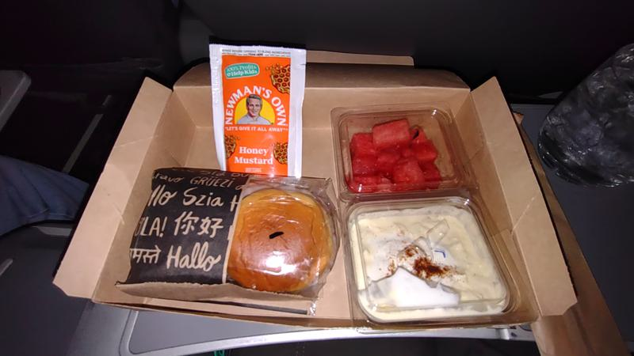
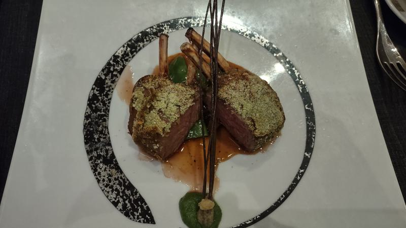
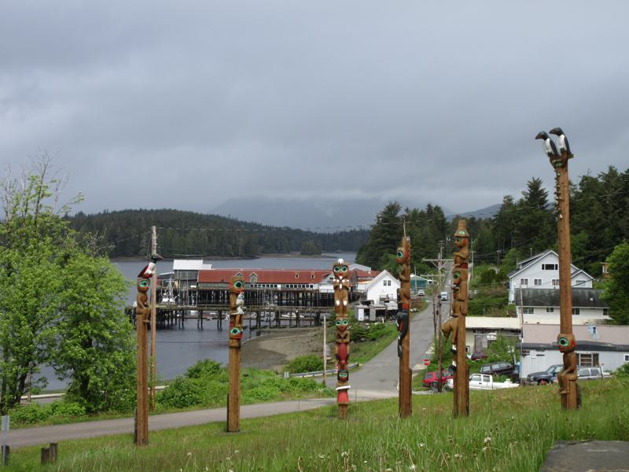
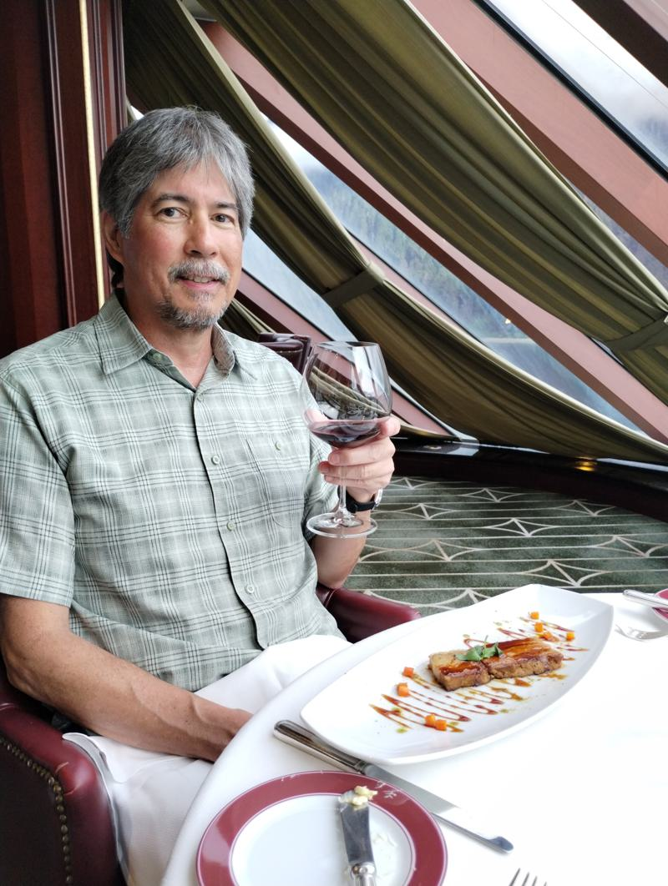
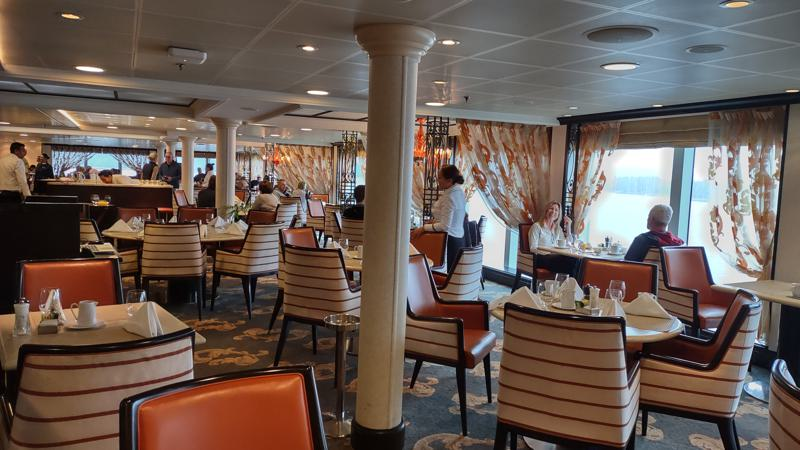
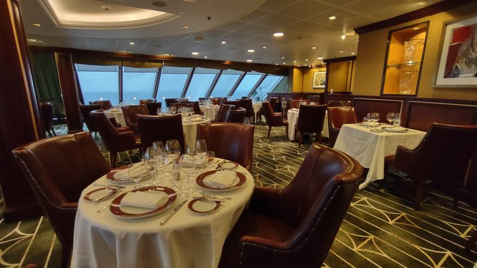

Pre-Cruise travel – May 27
Today is our travel day to Vancouver, Canada. Our flight departs at 956am which makes planning the drive through the morning traffic a challenge. Either we get up early to beat some of the traffic, arrive at the airport early and wait in the terminal; or sit in traffic and stress about missing the flight. So we got up early. Nevertheless, I get complaints about getting to the airport too early.
We left home around 5 am for the one hour drive to Van Nuys where we parked our car to catch the LAX Flyaway bus to the airport. The Flyaway bus terminal has a nice 5 level parking garage, where I can usually park inside. Sometimes the garage fills up, so I made a reservation about one week prior to our travel day. I chose 6am as my entry time. If I’m early I’ll need to wait.
The traffic was light and we arrived at the Van Nuys Flyaway station around 550am. I dropped Becky off at the curb with her luggage and she went inside to wait or get in line for the next bus. At 6am I drove through the parking gate to look for a spot in the garage. I found a spot on the second level and took a picture of my car and the zone that I was parked in. Twenty days from now I won’t have to wonder, where the hell is my car?
When I caught up with Becky, there was a long line for the next bus and I joined her in line. We were on the 620 am bus and we left on time. The traffic was heavy and Google Maps said the ride would take an hour. With no traffic it normally takes about 30 minutes. Once we were south of Sunset Boulevard we started moving a bit faster. It took 52 minutes to go from Van Nuys to LAX terminal 1 and another 15 minutes to arrive at terminal 5. Once inside the terminal, bag check and TSA PreCheck took another 10 minutes. Our gate was really a transfer gate where we would board a bus to a satellite terminal. Since we had a bit of time to spare, I walked to Concourse 6 to pick up some free snacks at the Priority Pass venue. About 40 minutes prior to boarding time we took the transfer bus to the American Eagle terminal, which is on the very east side of the airport.
At the checkin counter, my bag weighed 44 pounds and Becky’s weighed 49 pounds. Packing for this trip was more difficult than packing for a trip to the Caribbean or the Mexican Riviera. Cold weather clothes, like jackets, long pants and boots take up more room in the suitcase and are much heavier than tee-shirts and shorts. The long range forecast shows variable weather. Our first day in Vancouver was foretasted to be sunny and almost 80F, while our first port in Klawock is going to be rainy and 50F.
Our flight today was on an Embraer 175, operated by WestJet, which is an American Airlines’ regional partner. The flight was about 3 hours long and we were served a box lunch and a beverage. The box lunch was good. For our beverages I ordered a G&T and Becky had Jack and Sprite. Becky didn’t like her dessert or the fruit, so I ate them.

As we flew north I had nice views of Yosemite and Lake Tahoe.
The in-flight movies didn’t look interesting, so I listened to music and read a book on my kindle. The flight was 3 hours from wheels up to touch down.
Canadian customs and immigration was easy and in no time we were out on the curb waiting for the hotel shuttle to pick us up. We were able to get an early check in since I am an IHG member.
After doing a bit of unpacking we walked across the street to Costco to have a look around. We wanted to look at the wine selection available, but we discovered that this Costco doesn’t sell wine or beer. A quick search on my phone revealed a nearby liquor store. We found some wines that would be acceptable to bring on the cruise and we will purchase these tomorrow.
We picked up some food at Burger King for our evening meal which we ate in our room.
Vancouver – May 28
Today we have a free day in Vancouver. We arrived one full day early to do some sight seeing and provide margin for any delays in travel to our cruise port. My travel insurance would not fully cover a missed cruise since this would be considered a trip delay, reimbursable at $500 maximum per day for actual out of pocket expenses.
I was up at sunrise, about 5am. The water pressure for the shower was pretty low and the shower head was on tight so I couldn’t remove it and take out the flow restrictor. Becky got up later and I made a cup of coffee and did some work on the laptop while she got ready.
Breakfast was the typical Holiday Inn Express free hotel breakfast. This morning it was pre-made cheese omelets, bacon and coffee for me. I also had some yogurt and a cinnamon bun. I haven’t had a cinnamon bun in ages and it was good. The coffee and the rest of the breakfast was decent. The only thing I didn’t care for were the sausages since they had kind of a weird mushy consistency.
Around 930am we walked to the Bridgeport Skytrain station, a 10 minute walk. The weather was sunny and 70F in the morning. It’s a two zone trip to Waterfront Station and I get a dollar off the ticket for being a senior. The train starts at the airport and many of the passengers had luggage with them.

Today there were three cruise ships in port - Holland Zaandam, Regent Seven Seas Explorer and the Coral Princess. There was also a convention being held nearby, so the waterfront was bustling with a lot of people. We explored the shopping district along Granville St. and stopped in at the Cathedral of Our Lady of the Holy Rosary. Mass was being held and from the back of the church we watched the ending of mass. After a bit more window shopping we walked to the GasTown district for lunch.
We had a late lunch at a place called the SteamWorks Brewing Co., we both had burgers and beers. The food was good. After lunch we boarded the Skytrain back to the Bridgeport station in Richmond.
Near the station we bought three bottles of budget wine at a liquor store, which we will take onto the cruise ship. We can bring up to six on the ship. Two bottles are to drink in the room and we plan to bring one bottle to dinner, for which we will be charged a $25 corkage fee. We don’t have the beverage package, so this cruise is BYOB. More on that later.
We did a lot of walking today. My fitbit reported that I took 16,214 steps and walked 7.69 miles.
Embarkation – May 29
Today is embarkation day. I woke early, took my shower and made a cup of coffee. Breakfast was scrambled eggs, bacon, potatoes and a second cup of coffee. The weather outside was overcast and raining, foretasted to clear up in the afternoon.
We spent the morning packing and organizing our stuff for the trip to the cruise port. We were assigned an 1130am check in time. So I was keeping an eye on the traffic to gauge our travel time. At 10am I called for a Lyft car to pick us up and he was waiting at the hotel entrance when we came down stairs. The morning traffic was heavy and the trip took about 40 minutes. At the terminal, the attendant asked which cruise ship we were on and directed us to the correct location for passenger drop off. We had a 20 foot walk with our bags from the car to the luggage drop off point and only about three other passengers were there. We had some carry-on bags with us and a short elevator ride up two levels brought us to the check in line.
Today there were three cruise ships at the Canada Place terminal - the Riviera (1250 passengers, 800 crew), the Roald Amundsen (532 passengers, 175 crew) and the Silver Moon (596 passengers, 411 crew). Only Riviera passengers were boarding. No one was in the lines for the other ships. At 11am the line for the Riviera started to move and there were about 200 people in front of us. The line moved quickly and in about 30 minutes we had checked in, went through the metal detectors, had our carryon x-rayed and were on the ship.
Our ship is the Oceania Riviera and is part of Oceania Cruise Lines which is owned by Norwegian Cruise Lines. Oceania is considered a luxury cruise line and claims to have “The Finest Cuisine at Sea”. The Riviera was the second ship that Oceania built and the sixth ship in its fleet, at the time. The Riviera entered service in 2012 and was last refurbished in 2022. She has 625 staterooms which can hold 1250 guests (double occupancy) and has a crew of 800. With a displacement of 66,172 gross tons, she is a small ship by today’s Mega Ship standards.
Our cruise on the Riviera is called - Wilds Of Alaska, and is a 12 day cruise starting in Vancouver Canada and ending in Whittier, Alaska. We booked this cruise back in November of 2024 and made final payment in December. We normally monitor the web page for any sales or special offers; and prior to final payment we did get a substantial price reduction. Oceania is not very flexible once final payment was made and we missed out on additional offers. Oceania is having trouble selling out this cruise because there were still many cabins available the week prior to sailing.
On this cruise we get unlimited slow WiFi and $250 of onboard credit. We will use the onboard credit to buy drinks since we didn’t get the beverage package. The free beverage package was one of the promotional offers we missed out on. We could use our credit to make a down payment on a beverage package, but we would need to drink more than we usually do just to break even.
After boarding, we stopped by the restaurant reservation desk and made a 630pm reservation for two (no sharing) at Red Ginger, the Asian Fusion themed restaurant. We made our reservations for the other specialty restaurants about two and half months ago - as soon as the window opened. We were able to get the restaurants, times and tables we wanted. I think this is probably the only negative aspect of cruising on a small ship - that restaurant reservations are limited, and without priority, you will be sharing a table or eating very late. Some people like eating with strangers, but I prefer eating alone with Becky or with people we know.
We picked up question sheets for the Art Scavenger Hunt. This ship has a lot of original art. We will get a lot of Big-O points for completing the challenge, which can be turned in at the end of the cruise for merchandise. We have saved about 50 Big-O points from our last cruise, which we plan to redeem if there is a jacket in Becky’s size.
We dropped our carry-on bags in our room, which was not ready yet, but looked clean and made up and went to the Wave Grill for lunch. The Waves Grill is a casual alfresco dining venue located near the pool in a shaded area. I ordered a Cuban Sandwich - slow-roasted marinated pork, ham, swiss, dill pickles, mustard, grilled Cuban bread, mojo sauce and a side of sweet potato fries. The sandwich was good, I’ve had it on previous cruises and I was looking forward to having another one. Becky ordered a shrimp sandwich without the bread and a small plate of pork ribs. While waiting for our orders, Becky went to the Terrace Café (buffet), which was just a few steps away, to get a bowl of clam chowder. For dessert I had a scoop of strawberry ice cream. Then we went to Baristas, the ship’s coffee bar, for a latte and some cookies.
We spent the afternoon exploring the ship and looking at the art. Later we met our butler, Rohit, from India, who has a thick accent and very hard to understand, and our stateroom attendant, Jingle, from the Philippines.
Dinner at Red Ginger was a little disappointing. The food was just OK. We have had much better Asian food on other ships. We have a reservation at the same restaurant towards the end of the cruise and we will see if we can secure a reservation at one of the other restaurants as a replacement.


The show tonight was called Broadway in Concert, and was a melody of various songs from Broadway. The singers were good, but most of the songs we had not heard before.
Tonight the ship’s clocks get turned back one hour to put us on Alaska time.
Sea Day – May 30
I woke early, took my shower, got dressed and went to get some coffee. My first stop was the executive lounge. I didn’t stay long because it was crowded and the place didn’t have a good spot to work on my computer or any windows. So I went to the Horizon Lounge on deck 15. I found a spot by the window, got my coffee and settled in. The weather was overcast with some showers and windy. I happened to see a whale spout off in the distance. After Becky was ready we went for coffee at Baristas, the ship’s coffee bar. It was a busy place. We had breakfast in the main dining room; we both had omelets.
During the morning we continued to work on the art scavenger hunt. We met other passengers doing the scavenger hut and compared answers. The other morning activity was Oceania’s version of indoor Bocce Ball, which took about 2 minutes and we earned four Big-O points. The way the game is played is that one player rolls a white ball about 10 feet down the carpet and two players, each with four balls, attempt to roll their balls so that they come as close as possible to the white ball.
We had lunch in the main dining room. I had the chef’s special which was a taste of Mexico, the theme in the buffet today. This dish consisted of small samples of various entries, like tacos, beef in mole sauce, ceviche, etc. about six samples.
At 2pm, there was a Big-O points activity called Top Toss. This event consisted of tossing a bolo, which is a string connecting two balls, and trying to get the bolo to loop around one of three horizontal bars. We earned four Bi-O points for this activity.
At 4pm afternoon tea was served. Oceania puts on the best high tea that we have ever had at sea. We each had a little sandwich and a sweet bite. There was a string quartet playing classical tunes.
5pm Canapes arrived and we made drinks in our room. I had a Gin and Tonic and Becky had a whiskey and Sprite.
Dinner tonight was in the main dining room and lobster was served. I’m not a fan of lobster, so I had the salmon. Becky said the lobster was good and I tried a few bites and I agreed, it was good. Since it was Lobster Night, we went to the buffet and Becky got a grilled lobster tail. I had a cup of coffee and some ice cream.
The show tonight was a comedy and the comedian told jokes and funny stories somewhat related to things his Dad used to say. I thought it was OK, but Becky was bored and nodded off during the show. One guest, who was sitting in the front row, was also sleeping during the performance and the comedian proceeded to roast him. That was kind of funny and the guest must have gotten a bit upset, because the roasting continued about him being upset.
Klawock – May 31
Today’s port is the small city of Klawock located on the west coast of Prince of Wales Island in Southeast Alaska. The city is located about 56 miles west of Ketchikan as the crow flies.
After completing our morning routine of coffee, breakfast and bocce ball, we boarded one of the ship’s tenders for the short ride to shore. The Klawock cruise ship port opened in 2024. The port is actually just a small dock and a large gravel parking lot. The facility is owned and operated by Tlingit companies. The passenger terminal area consists of a small dock, a large tent and a yurt that houses a coffee shop. Inside the tent is a waiting area for tours and some information booths. Many of the tours had not departed and there was a long line for the shuttle bus to town.
After standing inline a bit and not seeing any shuttle buses, Becky went to talk to one of the guides while I held our place in line. We decided to walk to town, only 2 miles away along mostly flat terrain. The weather forecast called for a break in the rain and it did look like the weather was improving. Walking behind us were several other couples who decided to follow our lead and walk to town. After a 20 minute walk, mostly along a gravel road and past a lumber mill, we arrived at the edge of town.
One of Klawock’s most significant attractions is the Klawock Totem Park, which has the largest collection of authentic totem poles in Alaska. All the totem poles looked new. While we were there, several tour groups also stopped and we could overhear the narration about the totem poles. Just as we were about to leave the totem pole park, the shuttle bus came by and we hopped on for a ride back to the cruise terminal. We had planned to see a small church and the cultural center, but given that the shuttle had just arrived and judging by the looks of what we saw of the town, we decided to skip the rest of planned stops and return to the ship. The shuttle bus first took us to the nearby town of Craig before heading to the ship. Along the way the driver provided comments about life in this part of Alaska and the attractions.

Back on board, we went to the spa to soak in the hot tub and use the sauna. The hot tub wasn’t that warm so we didn’t stay too long. Becky went back to our room to get ready for afternoon tea and I stayed to sit in the dry sauna for about 15 minutes.
The captain’s party was rescheduled to take place today; it was originally scheduled for yesterday, but postponed on account of the rough seas. The rocking and rolling wasn’t that bad, but delaying the party was probably a good idea since many of the passengers are older. Since the drinks are free, the party was very well attended. We left the party early because we had dinner reservations.
Dinner tonight was at Jocques, the french themed restaurant. The food was excellent and we had a table for two next to the window where we could see the islands as we passed by. I would say that our dining experience tonight did qualify as the “Finest Dining at Sea”. Becky had the Herb-Roasted Lamb Rack and I had the Filet Mignon with seared Foie Gras and Truffle Sauce.
Ketchikan – June 1
Today’s port is Ketchikan and the Riviera docked at Ward Cove, about 8 miles from the center of town. Free buses were provided and at 830am we were on the bus heading towards town. As we were walking to the bus, the Carnival Legend was just pulling into the dock opposite the Riviera. Ward Cove can accommodate two cruise ships. There are five cruise ships scheduled to dock within walking distance to town. So there are a total of seven ships docked in Ketchikan today with a passenger count exceeding the town’s population. The bus ride to town took about 20 minutes and the driver provided a nice narration which made the trip go by faster. The weather today was mostly cloudy and a bit chilly in the morning, but it warmed to the upper 50’s by noon; and the sunshine made it seem warmer.
The plan for today was to explore the town on foot, do some window shopping, visit the Discovery Center and Creek Street. The town was very busy with all the cruise passengers. Most of the shops don’t sell anything we are interested in. One thing that did surprise me was all the restaurants were packed, presumably with cruise passengers who didn’t get enough food on the ship.
We stopped into the Southeast Alaska Discovery Center, which is run by the US Forest Service. This is Alaska’s Public Lands Information Center, the only one in Southeast Alaska. It has 20,000 square feet of exhibits highlighting the beauty, diversity and history of Alaska’s temperate rainforest. Entrance to the center is free with a National Park Pass, otherwise not really worth the $5 entrance fee. We watched a nice informative movie and wandered about looking at the exhibits. Perhaps the most important feature to one of us were the clean bathrooms.
Creek Street was very busy and looked the same as I remember from past visits. On the way back to the bus we stopped into a convenience store and bought a couple of cans of locally brewed beer to have in our room. By noon we were back on the bus going back to the ship.

For lunch we ordered room service sandwiches and a bowl of potato chips. In the afternoon, we continued to work on the Art Scavenger Hunt; we are looking for seven answers. Becky finished a movie and later we went to happy hour at Martini’s to order two for one drinks.
Happy hour runs from 5 to 6pm. Oceania’s basic beverage package, called the House Select package (beer or wine at lunch and dinner) was not included in our fare at the time we booked the cruise. Oceania also offers an upgraded beverage package called the Prestige Select package ($69.95 per day per person), which includes unlimited premium spirits, cocktails, wine, and beer. It would be difficult for us to drink enough to break even under the Prestige Select package. Martinis ordered at happy hour are $16.20 for two. The only limitation is that the drinks must be the same. Since Becky prefers the fruiter drinks, I let her choose the martinis. Otherwise, I would order a traditional vodka or gin martini.
For dinner we dined in-suite. Earlier in the day we arranged to have dinner in our room with food from The Polo Grill, the steak house themed restaurant. Our butler will serve the food course by course or all at once, so we asked the food to be served in two courses, appetizers and starters first, followed by the main course with dessert. We each had a glass of wine from the bottles we had purchased in Vancouver. It was nice to enjoy the food, wine and views of the small islands and Alaskan coast as we sailed to our next port.
I overheard a passenger talking about the aurora and that it should be visible after the sunset. So I looked it up online, and sure enough the NOAA prediction for aurora visibility is highly likely. Unfortunately, it was overcast so we didn’t see anything. For the rest of the cruise I’ll keep an eye out for some clear weather after dark.
Wrangell – June 2
Today’s port is Wrangell. The ship was docked by 8am and passengers were walking ashore by 830am. The weather was overcast and 50F, with no rain or wind. The town is located on the northern tip of Wrangell Island and is 155 miles south of Juneau. The town is named after the island, which was named after Ferdinand Petrovich Wrangel, a Russian explorer and the administrator of the Russian-American Company from 1830 to 1835. As of the 2020 census the population was 2,127.
Our self guided walking tour of the town included stops at the visitor’s center, a totem pole carving center, the local thrift shop and the city market. We walked about a mile to the petroglyph State Park. Over 40 petroglyphs are visible on the rocks at low tide, which can provide a glimpse into the artistic expressions of the early inhabitants of the area. The date of the petroglyphs hasn’t been determined, but the site itself is about 8,000 years old. There were about three tour groups at the beach and one of the guides who had a loud voice which could be heard from a distance away was providing her group a very extensive narration of the history and age of the petroglyphs, which was very informative.
We were back aboard in time for lunch. Lamb kabobs, ribs and Indian food were being served in the buffet, which sounded good. After lunch we went to the spa to soak in the hot tub, the water temperature was warmer today. Becky went back to the room to get ready and I went to the steam room to relax and rehydrate my skin. The ship’s air conditioning is making my skin dry and chapping my lips. Also, many areas of the ship are cold and sitting in the steam sauna for about 15 minutes warmed me to the core.
Later in the day the Captain made an announcement about our schedule for tomorrow. He said the passengers have been using too much water and that it was necessary for the ship to divert to the open ocean to dump the holding tanks, since discharging the waste water tanks is not allowed along the coast of Alaska. So we would be delayed by two hours at our next port. We have been cruising the coastal waterways for the past four days and have five more days in the coastal waters. So I doubt that “the passengers have been using too much water”. I think the ship simply cannot store more than four or five days of wastewater in their holding tanks and at some point the ship would need to discharge the tanks. This particular itinerary prevents them from doing that on a more regular basis. Anyway, that’s my analysis.
At 5pm we went to happy hour to order a pair of Martinis at Martinis. Dinner tonight was in the main dining room. We attended the show tonight, which was a medley of songs and performances from the musicals of the 40’s to the 60’s. The show turned out to be kind of a sleeper and I nodded off throughout the performance.
Icy Strait Point – June 3
Today’s port was Icy Strait Point, which is a cruise destination located on Chichagof Island, about 35 miles west of Juneau and named after the nearby Icy Strait. The port was established in 1996 by the Alaskan Native Huna Totem Corporation and it is the only privately-owned cruise destination in Alaska. The port is built at the site of a restored 1912 Alaskan salmon cannery. The cannery now houses a museum, local arts and crafts shops, and restaurants.
The Riviera anchored a short distance off shore and we took tenders ashore. Around 11am we went to the theater to wait for the next tender. The ride to shore took about 5 minutes and by 1130am we were on the gondola that takes passengers from one side of the port to the other. There was one other cruise ship in port during the morning with more arriving later.

The Riviera was in port from 10am to about 10pm, way more than enough time to see and do everything. It only took us about an hour to wander around the shops and visit the museum. By 130pm we were back onboard.
We ordered room service for lunch and then went to the spa to sit in the hot tub and then the steam room. Later, I took a nap.
Dinner tonight was at the Polo Grill, which is a steak house themed restaurant. We had a nice table for two next to the window. We each had a glass of wine from the bottle of the budget red wine we had purchased in Vancouver. I wasn’t expecting the wine to be anything great, but it was surprisingly good. The corkage fee of $25 plus the price of the bottle, about $8 US, is about the same as Oceania charges for two glasses of their wine by the glass ($16 plus 20% for each glass). Becky ordered steak and lobster and I had the Filet Mignon. We shared a seven layer chocolate cake for dessert. Overall, a very nice dining experience.

After dinner we listened to Abba hits at the Abba mania dance party.
Haines – June 4
Today we are in Haines, Alaska, which is in the northern part of the Alaska Panhandle and nestled along America’s longest fjord, the Lynn Canal. As of the 2020 census, the population of Haines was 1,657. The weather today was overcast, windy and 50F. Rain was forecasted to start around noon, but it didn’t start until after 8pm.
The Roald Amundsen, a small expedition cruise ship operated by the Norwegian company Hurtigruten was also in port. They were tendering their passengers ashore. The Riviera was docked, which makes for easy on and off.
We left the ship around 11am to start our DIY walking tour of the town. We went to see some totem poles and a few other spots in town. Near the cruise ship pier is Fort William H. Seward, the first permanent U.S. Army post in Alaska, was built south of Haines in 1904. We walked the loop around the parade grounds to look at the historic buildings.
We returned to the ship in the early afternoon and ordered room service for lunch. Then we went to the spa to soak in the hot tub and steam sauna.
At 4pm we attended afternoon tea. Dinner tonight was at Tuscana, the Italian themed restaurant. Dinner was good and we had a nice table by the window. We usually line up for dinner about 10 minutes before the doors open to be the first or second ones seated. Tonight I had the Mediterranean sea bass and Becky had the lobster in pasta.
The show tonight was titled, Divas Hits, by an English singer named Alison Ward. We had trouble staying awake.
Cabin 10025
Our cabin on this cruise is a Penthouse Suite, stateroom #10025, located on deck 10. This cabin is one of the nicer rooms we have had, and the first with a walk in closet. The room is about 440 square feet in size and the bathroom is very spacious. This cabin category comes with access to the executive lounge, the Thalassotherapy Pool (a large saltwater hot tub) with private sundeck and early dining reservations.
Gratuities and standard WiFi were included in the fare. The extras are alcoholic beverages and shore excursions.
Ship Art
The Riviera has a large and varied collection of art on the ship. We enjoyed doing the art scavenger hunt since it gave us an excuse to wander the ship and study the art. Some of the art is what I would consider classical or traditional abstract, but much of the collection included some bizarre pieces. One lady said to Becky, “the art on the ship is just terrible.” I didn’t think it was terrible, just unusual or strange in some cases. Over all, the collection was interesting and thought provoking; certainly getting a WFT reaction in some cases.
Here are some samples of the art.
Photos from Around the Ship
Here is a collection of photos taken in the various public spaces around the ship.


